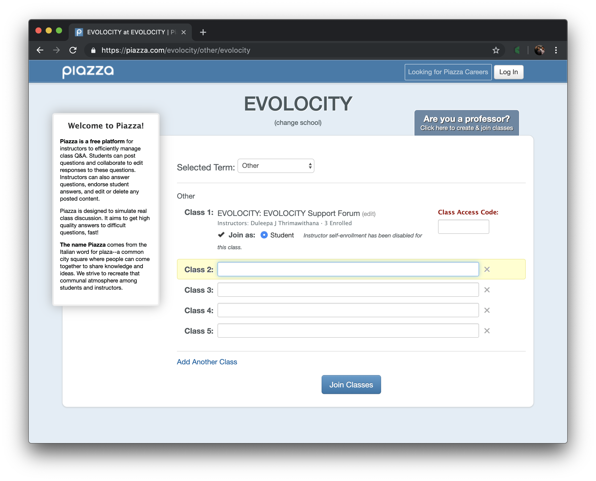
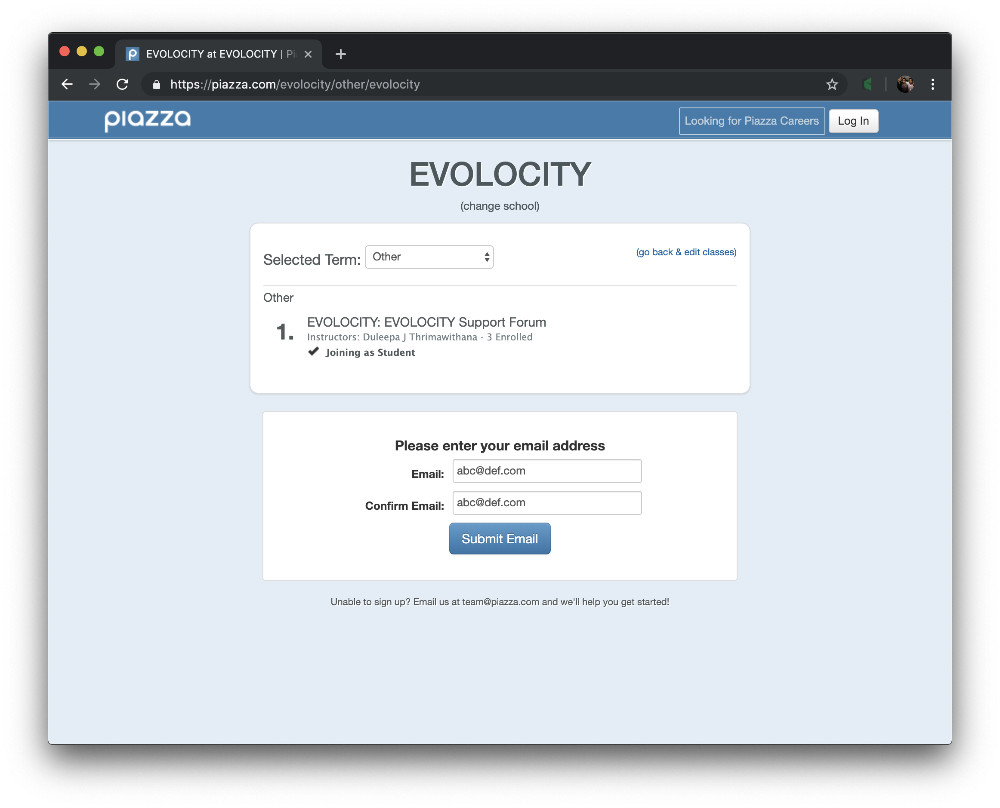
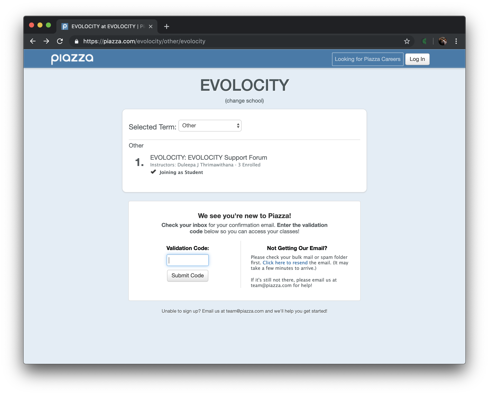
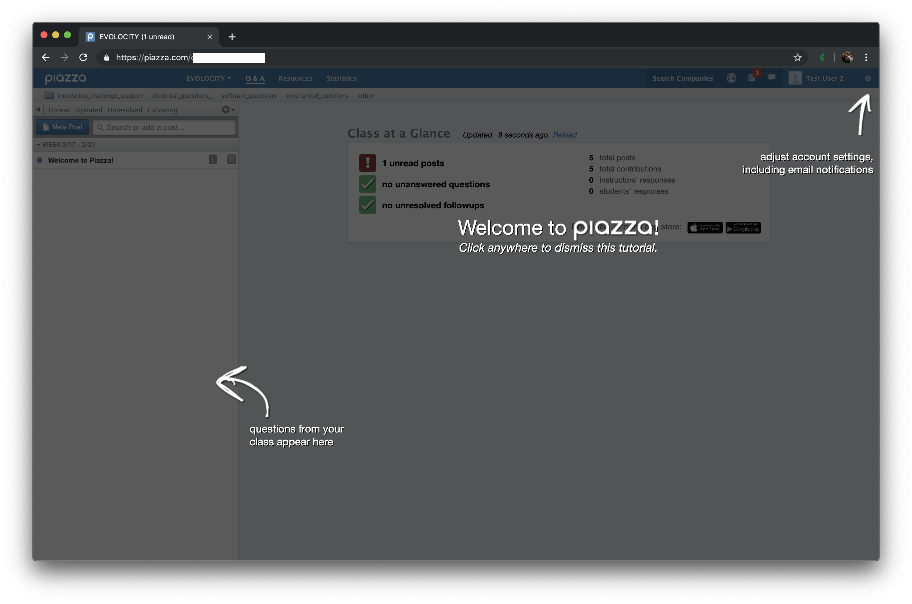
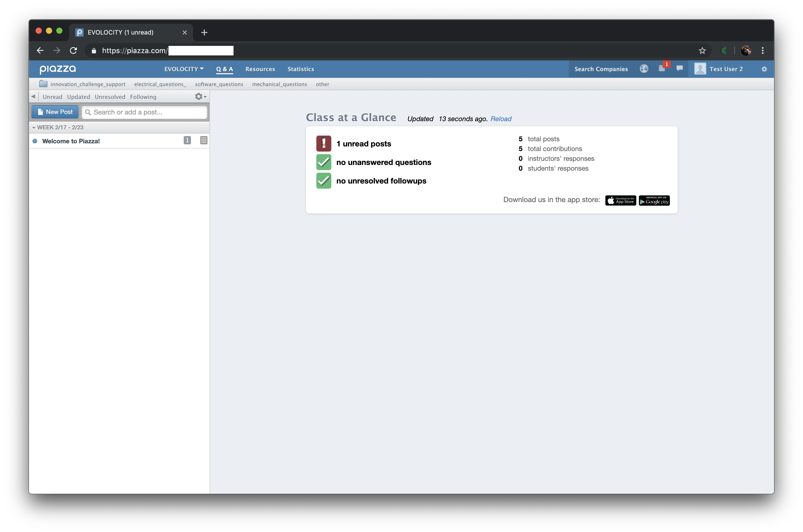
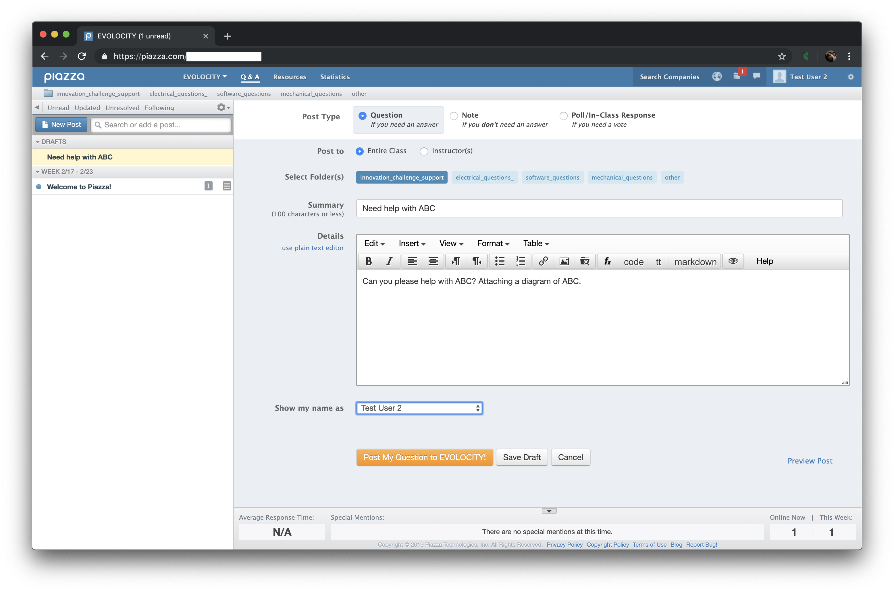
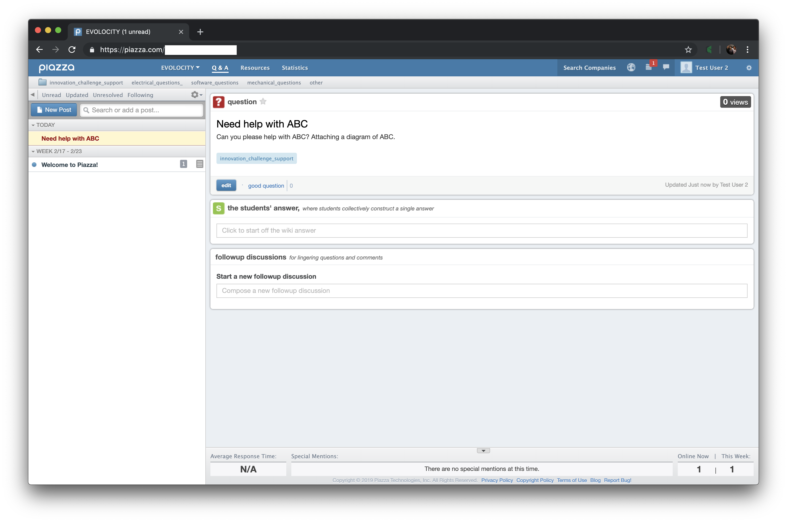

class: title-slide count: false .logo-title[] # Piazza ### Setup and Use .TitleAuthor[Duleepa J Thrimawithana] --- layout: true name: template_slide .logo-slide[] .footer[Duleepa J Thrimawithana, Department of Electrical, Computer and Software Engineering (2019)] --- # Registration - Step 1 - Go to https://piazza.com/evolocity/other/evolocity - Select term as "Other" and "Join as Student" - Enter access code given by the Evolocity co-ordinator .center[] --- # Registration - Step 2 - Enter your email address .center[] --- # Registration - Step 3 - Enter verification code recieved via email .center[] --- # Registration - Step 4 - Enter personal details and select "I'm Not Pursuing a Degree" and continue .center[] --- # Registration - Step 5 - If you decide to join the Piazza Network agree to terms and contiue .center[] --- # Welcome Screen - Once you complete the registration you will get to the welcome screen .center[] --- # Piazza Home Page - You can create posts asking for help - You can view questions asked by other and answers provided - You can view posts made by staff and other additional resources made available .center[] --- # Posting a Question - Click on the "New Post" button on top left - Select appropriate folder (e.g. innovation_challenge_support) and write your question - You can make anonymous posts as well as private posts that only staff can see .center[] --- # Responding to a Question - You can view questions and answers - You can also answer questions posted by other students - You can also have groups and group discussions .center[] --- class: title-slide layout: false count: false .logo-title[] # Enjoy 😄